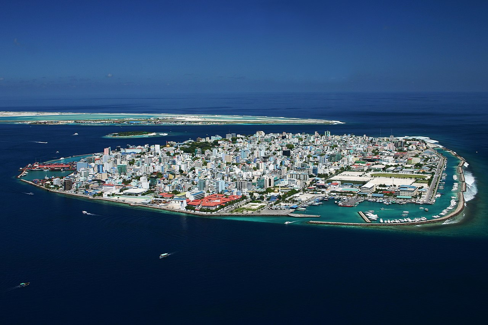
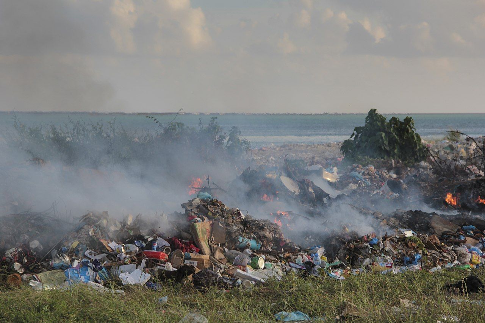
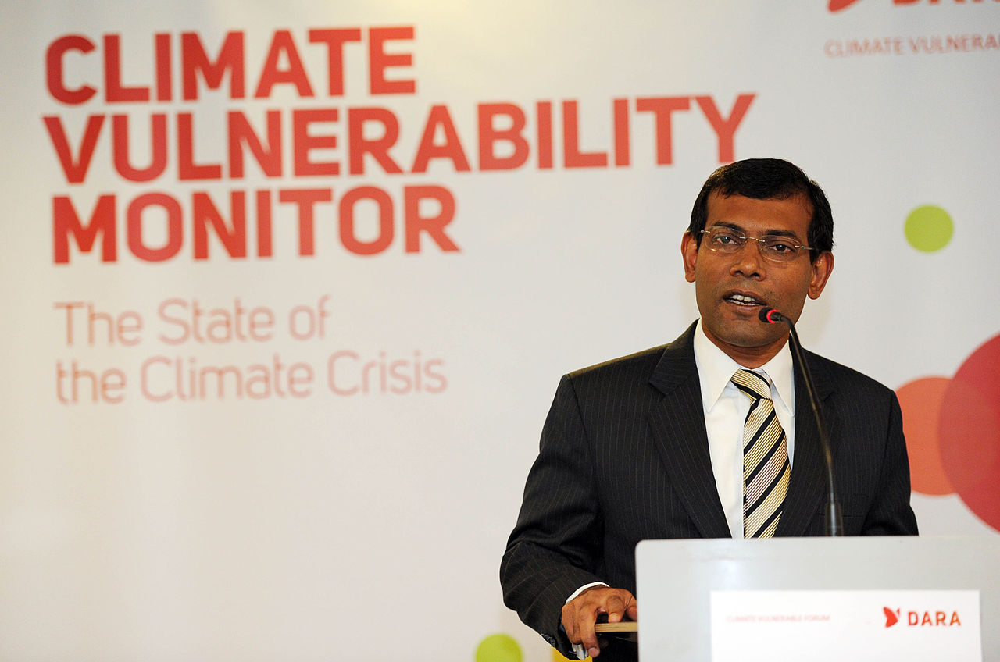

|  |
|
The Maldives, with its unique culture, rich history, and vibrant communities, is at risk of being lost forever due to the effects of rapid climate change. It is estimated that by the year 2050, around eighty percent of the nation will be considered uninhabitable due to climate change. By 2100, is is estimated that due to rising sea levels, most of the islands in the Maldives will need to be evacuated. |
|  |
|
The Maldives, numbering 1,192 islands, 187 of which are inhabited, is extremely vulnerable to the effects of climate change and rising sea levels due to its geographic characteristics. With an average elevation of just 1.5 meters above sea level, the nation stands precariously in the face of rising tides. The constant encroachment of the Indian Ocean, made worse by the warming climate, threatens the very existence of this island nation, as well as the home of its 521,400 inhabitants. |
|  |
|
The role of international cooperation is crucial in addressing many of the challenges that the Maldives and other at-risk island nations face due to climate change. Climate change is a global danger, and its impacts transcend national borders. |
software solutions can play a significant role in addressing
the challenges posed by climate change in the Maldives.
Examples of such technologies are:
Software solutions are not limited to these.